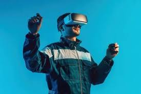
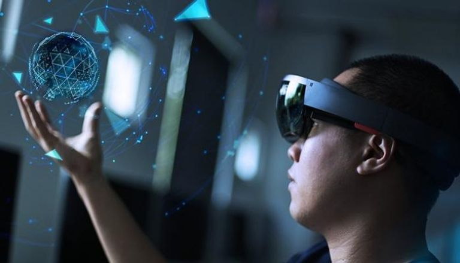

طريقه استخدام النظارة الافتراضية :
استخدام نظارات الواقع الافتراضي في التعليم لتوفير تجربة تفاعلية ومحفزة للطلاب. فمثلاً، يمكن للطلاب الانغماس في بيئة تعليمية واقعية وتفاعلية لتعلم المفاهيم الصعبة بشكل أفضل
- كما يمكن استخدام نظارات الواقع الافتراضي في التدريبات الرياضية، حيث يمكن للرياضيين الانغماس في بيئة تدريبية واقعية وتفاعلية لتحسين أدائهم
- بالإضافة إلى ذلك، يمكن استخدام نظارات الواقع الافتراضي في العديد من المجالات الأخرى، مثل التصميم الهندسي والترفيه والسفر والسياحة. ومن المتوقع أن تشهد استخدامات نظارات الواقع الافتراضي المزيد من التطور والتوسع في المستقبل.
مكن استخدامات نظارات الواقع الافتراضي في صناعة السيارات لتحسين تصميم السيارات وتحسين تجربة القيادة. حيث يمكن للمصممين والمهندسين استخدام نظارات الواقع الافتراضي لاختبار تصميمات السيارات وتحسينها

